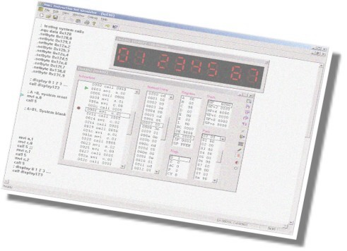

8085 Instruction Set Simulator
PING-Systems introduces a cool way to learn and write 8085 assembly language programs. Gone are the days when you punched in the assembly language in hex format and hoped nothing went wrong. This cool software allows you to put your resources and skills into programming, saving you lot of time which otherwise goes into making sure that the punched hex code was correct Simulate your programs in a powerful graphical environment with powerful debugger, editor and help system. This software is completely free for non commercial purposes. Please contact the author Vijay Kumar to obtain a license for business use. Enjoy!!!